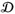
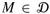

|
|
< Day Day Up > |
|
A public-key cryptosystem can be used to encrypt messages sent between two communicating parties so that an eavesdropper who overhears the encrypted messages will not be able to decode them. A public-key cryptosystem also enables a party to append an unforgeable "digital signature" to the end of an electronic message. Such a signature is the electronic version of a handwritten signature on a paper document. It can be easily checked by anyone, forged by no one, yet loses its validity if any bit of the message is altered. It therefore provides authentication of both the identity of the signer and the contents of the signed message. It is the perfect tool for electronically signed business contracts, electronic checks, electronic purchase orders, and other electronic communications that must be authenticated.
The RSA public-key cryptosystem is based on the dramatic difference between the ease of finding large prime numbers and the difficulty of factoring the product of two large prime numbers. Section 31.8 describes an efficient procedure for finding large prime numbers, and Section 31.9 discusses the problem of factoring large integers.
In a public-key cryptosystem, each participant has both a public key and a secret key. Each key is a piece of information. For example, in the RSA cryptosystem,each key consists of a pair of integers. The participants "Alice" and "Bob" are traditionally used in cryptography examples; we denote their public and secret keys as PA, SA for Alice and PB, SB for Bob.
Each participant creates his own public and secret keys. Each keeps his secret key secret, but he can reveal his public key to anyone or even publish it. In fact, it is often convenient to assume that everyone's public key is available in a public directory, so that any participant can easily obtain the public key of any other participant.
The public and secret keys specify functions that can be applied to any message. Let  denote the set of permissible messages. For example,  might be the set of all finite-length bit sequences. In the simplest, and original, formulation of public-key cryptography, we require that the public and secret keys specify one-to-one functions from
might be the set of all finite-length bit sequences. In the simplest, and original, formulation of public-key cryptography, we require that the public and secret keys specify one-to-one functions from  to itself. The function corresponding to Alice's public key PA is denoted PA(), and the function corresponding to her secret key SA is denoted SA(). The functions PA() and SA() are thus permutations of . We assume that the functions PA() and SA() are efficiently computable given the corresponding key PA or SA.
to itself. The function corresponding to Alice's public key PA is denoted PA(), and the function corresponding to her secret key SA is denoted SA(). The functions PA() and SA() are thus permutations of . We assume that the functions PA() and SA() are efficiently computable given the corresponding key PA or SA.
The public and secret keys for any participant are a "matched pair" in that they specify functions that are inverses of each other. That is,
for any message . Transforming M with the two keys PA and SA successively, in either order, yields the message M back.
In a public-key cryptosystem, it is essential that no one but Alice be able to compute the function SA() in any practical amount of time. The privacy of mail that is encrypted and sent to Alice and the authenticity of Alice's digital signatures rely on the assumption that only Alice is able to compute SA(). This requirement is why Alice keeps SA secret; if she does not, she loses her uniqueness and the cryptosystem cannot provide her with unique capabilities. The assumption that only Alice can compute SA() must hold even though everyone knows PA and can compute PA(), the inverse function to SA(), efficiently. The major difficulty in designing a workable public-key cryptosystem is in figuring out how to create a system in which we can reveal a transformation PA() without thereby revealing how to compute the corresponding inverse transformation SA().
In a public-key cryptosystem, encryption works as shown in Figure 31.5. Suppose Bob wishes to send Alice a message M encrypted so that it will look like unintelligible gibberish to an eavesdropper. The scenario for sending the message goes as follows.
Bob obtains Alice's public key PA (from a public directory or directly from Alice).
Bob computes the ciphertext C = PA(M) corresponding to the message M and sends C to Alice.
When Alice receives the ciphertext C, she applies her secret key SA to retrieve the original message: M = SA(C).
Because SA() and PA() are inverse functions, Alice can compute M from C. Because only Alice is able to compute SA(), Alice is the only one who can compute M from C. The encryption of M using PA() has protected M from disclosure to anyone except Alice.
Digital signatures are similarly easy to implement within our formulation of a public-key cryptosystem. (We note that there are other ways of approaching the problem of constructing digital signatures, which we shall not go into here.) Suppose now that Alice wishes to send Bob a digitally signed response M′. The digital-signature scenario proceeds as shown in Figure 31.6.
Alice computes her digital signature Σ for the message M′ using her secret key SA and the equation Σ = SA(M′).
Alice sends the message/signature pair (M′, Σ) to Bob.
When Bob receives (M′, Σ), he can verify that it originated from Alice by using Alice's public key to verify the equation M′ = PA(Σ). (Presumably, M′ contains Alice's name, so Bob knows whose public key to use.) If the equation holds, then Bob concludes that the message M′ was actually signed by Alice. If the equation doesn't hold, Bob concludes either that the message M′ or the digital signature Σ was corrupted by transmission errors or that the pair (M′, Σ) is an attempted forgery.
Because a digital signature provides both authentication of the signer's identity and authentication of the contents of the signed message, it is analogous to a handwritten signature at the end of a written document.
An important property of a digital signature is that it is verifiable by anyone who has access to the signer's public key. A signed message can be verified by one party and then passed on to other parties who can also verify the signature. For example, the message might be an electronic check from Alice to Bob. After Bob verifies Alice's signature on the check, he can give the check to his bank, who can then also verify the signature and effect the appropriate funds transfer.
We note that a signed message is not encrypted; the message is "in the clear" and is not protected from disclosure. By composing the above protocols for encryption and for signatures, we can create messages that are both signed and encrypted. The signer first appends his digital signature to the message and then encrypts the resulting message/signature pair with the public key of the intended recipient. The recipient decrypts the received message with his secret key to obtain both the original message and its digital signature. He can then verify the signature using the public key of the signer. The corresponding combined process using paper-based systems is to sign the paper document and then seal the document inside a paper envelope that is opened only by the intended recipient.
In the RSA public-key cryptosystem, a participant creates his public and secret keys with the following procedure.
Select at random two large prime numbers p and q such that p ≠ q. The primes p and q might be, say, 512 bits each.
Compute n by the equation n = pq.
Select a small odd integer e that is relatively prime to φ(n), which, by equation (31.19), equals (p - 1)(q - 1).
Compute d as the multiplicative inverse of e, modulo φ(n). (Corollary 31.26 guarantees that d exists and is uniquely defined. We can use the technique of Section 31.4 to compute d, given e and φ(n).)
Publish the pair P = (e, n) as his RSA public key.
Keep secret the pair S = (d, n) as his RSA secret key.
For this scheme, the domain  is the set Zn. The transformation of a message M associated with a public key P = (e, n) is
is the set Zn. The transformation of a message M associated with a public key P = (e, n) is
The transformation of a ciphertext C associated with a secret key S = (d, n) is
These equations apply to both encryption and signatures. To create a signature, the signer applies his secret key to the message to be signed, rather than to a ciphertext. To verify a signature, the public key of the signer is applied to it, rather than to a message to be encrypted.
The public-key and secret-key operations can be implemented using the procedure MODULAR-EXPONENTIATION described in Section 31.6. To analyze the running time of these operations, assume that the public key (e, n) and secret key (d, n) satisfy lg e = O(1), lg d ≤ β, and lg n ≤ β. Then, applying a public key requires O(1) modular multiplications and uses O(β2) bit operations. Applying a secret key requires O(β) modular multiplications, using O(β3) bit operations.
The RSA equations (31.35) and (31.36) define inverse transformations of Zn satisfying equations (31.33) and (31.34).
Proof From equations (31.35) and (31.36), we have that for any M ∈ Zn,
P(S(M)) = S(P(M)) = Med (mod n).
Since e and d are multiplicative inverses modulo φ(n) = (p - 1)(q - 1),
ed = 1 + k(p - 1)(q - 1)
for some integer k. But then, if M ≢ 0 (mod p), we have
|
Med |
≡ |
M (MP-1)k(q-1) |
(mod p) | |
|
≡ |
M(1)k (q-1) |
(mod p) |
(by Theorem 31.31) |
|
|
≡ |
M |
(mod p). |
Also, Med ≡ M (mod p) if M ≡ 0 (mod p). Thus,
Med ≡ M (mod p)
for all M. Similarly,
Med ≡ M (mod q)
for all M. Thus, by Corollary 31.29 to the Chinese remainder theorem,
Med ≡ M (mod n)
for all M.
The security of the RSA cryptosystem rests in large part on the difficulty of factoring large integers. If an adversary can factor the modulus n in a public key, then he can derive the secret key from the public key, using the knowledge of the factors p and q in the same way that the creator of the public key used them. So if factoring large integers is easy, then breaking the RSA cryptosystem is easy. The converse statement, that if factoring large integers is hard, then breaking RSA is hard, is unproven. After two decades of research, however, no easier method has been found to break the RSA public-key cryptosystem than to factor the modulus n. And as we shall see in Section 31.9, the factoring of large integers is surprisingly difficult. By randomly selecting and multiplying together two 512-bit primes, one can create a public key that cannot be "broken" in any feasible amount of time with current technology. In the absence of a fundamental breakthrough in the design of number-theoretic algorithms, and when implemented with care following recommended standards, the RSA cryptosystem is capable of providing a high degree of security in applications.
In order to achieve security with the RSA cryptosystem, however, it is advisable to work with integers that are several hundred bits long, to resist possible advances in the art of factoring. At the time of this writing (2001), RSA moduli were commonly in the range of 768 to 2048 bits. To create moduli of such sizes, we must be able to find large primes efficiently. Section 31.8 addresses this problem.
For efficiency, RSA is often used in a "hybrid" or "key-management" mode with fast non-public-key cryptosystems. With such a system, the encryption and decryption keys are identical. If Alice wishes to send a long message M to Bob privately, she selects a random key K for the fast non-public-key cryptosystem and encrypts M using K , obtaining ciphertext C. Here, C is as long as M, but K is quite short. Then, she encrypts K using Bob's public RSA key. Since K is short, computing PB(K) is fast (much faster than computing PB(M)). She then transmits (C, PB(K)) to Bob, who decrypts PB(K) to obtain K and then uses K to decrypt C, obtaining M.
A similar hybrid approach is often used to make digital signatures efficiently. In this approach, RSA is combined with a public one-way hash function h-a function that is easy to compute but for which it is computationally infeasible to find two messages M and M′ such that h(M) = h(M′). The value h(M) is a short (say, 160-bit) "fingerprint" of the message M. If Alice wishes to sign a message M, she first applies h to M to obtain the fingerprint h(M), which she then encrypts with her secret key. She sends (M, SA(h(M))) to Bob as her signed version of M. Bob can verify the signature by computing h(M) and verifying that PA applied to SA(h(M)) as received equals h(M). Because no one can create two messages with the same fingerprint, it is computationally infeasible to alter a signed message and preserve the validity of the signature.
Finally, we note that the use of certificates makes distributing public keys much easier. For example, assume there is a "trusted authority" T whose public key is known by everyone. Alice can obtain from T a signed message (her certificate) stating that "Alice's public key is PA." This certificate is "self-authenticating" since everyone knows PT. Alice can include her certificate with her signed messages, so that the recipient has Alice's public key immediately available in order to verify her signature. Because her key was signed by T, the recipient knows that Alice's key is really Alice's.
Consider an RSA key set with p = 11, q = 29, n = 319, and e = 3. What value of d should be used in the secret key? What is the encryption of the message M = 100?
Prove that if Alice's public exponent e is 3 and an adversary obtains Alice's secret exponent d, then the adversary can factor Alice's modulus n in time polynomial in the number of bits in n. (Although you are not asked to prove it, you may be interested to know that this result remains true even if the condition e = 3 is removed. See Miller [221].)
Prove that RSA is multiplicative in the sense that
PA(M1) PA(M2) ≡ PA(M1 M2) (mod n).
Use this fact to prove that if an adversary had a procedure that could efficiently decrypt 1 percent of messages from Zn encrypted with PA, then he could employ a probabilistic algorithm to decrypt every message encrypted with PA with high probability.
|
|
< Day Day Up > |
|